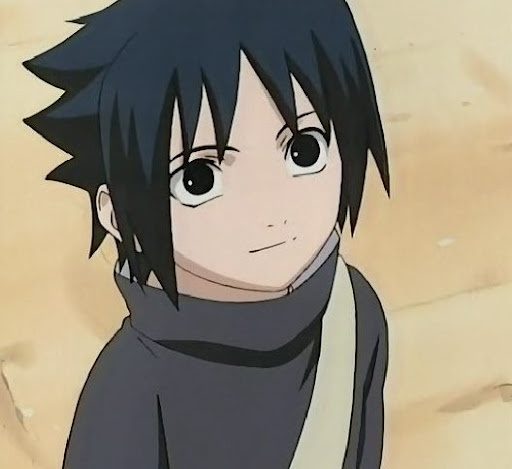

Саске Учиха (яп. うちはサスケ, Учиха Сасукэ) — один из последних выживших членов клана Учиха из Деревни Скрытого Листа. После того, как его старший брат Итачи вырезал весь их клан, Саске поставил перед собой жизненную цель отомстить за клан и семью, убив Итачи. Он попадает в Команду 7, когда становится ниндзя, и благодаря состязаниям со своим соперником и лучшим другом, Наруто Узумаки, начинает оттачивать свои навыки. Недовольный своим прогрессом, он покидает Лист, чтобы обрести силу, необходимую для осуществления мести. Годы, проведённые в поисках мести, стали невероятно взыскательными и неразумными, равно как и изолировали его от других, из-за чего он вскоре становится международным преступником. После того, как Саске сыграл одну из ключевых ролей в окончании Четвёртой Мировой Войны Шиноби, а Наруто смог избавить его от ненависти, он решает вернуться в Скрытый Лист и посвящает свою жизнь защите деревни и её жителей — таким образом, он становится известен под прозвищем "Поддерживающий Каге" (яп. 支う影, Сасаукагэ, Буквальное значение: Поддерживающая Тень).
Детства Учихи Саске
Саске — второй и младший сын Микото и Фугаку Учихи; они назвали его в честь Саске Сарутоби в надежде, что он однажды станет таким же сильным шиноби.[14] Саске рос в тени старшего брата Итачи, настоящего гения, которого многие из клана Учиха и жителей деревни постоянно сравнивали с Саске и его достижениями. Сам Саске обожал Итачи и никогда не упускал возможности провести с ним время. Несмотря на то, что Итачи приветствовал его компанию, позволяя Саске наблюдать за его тренировками, и брал его в лес на поиски приключений,[15] сам Итачи редко помогал Саске стать лучше как шиноби; когда тот просил его, он часто тыкал лоб Саске и обещал помочь ему в следующий раз. Это раздражало Саске, но не становилось причиной ухудшить своё отношение к брату.
При поступлении в Академию Ниндзя Листа, Саске оказывается лучшим в своём классе, неизменно получая высшие оценки.[16] Тем не менее, он никогда не приближался к той планке, которую установил Итачи, что привело к тому, что его отец уделял Саске меньшее внимание.[17] Заметив это пренебрежение, Итачи, невзирая на растущую занятость, пытался заменять в этом плане отца, признавая старания Саске, чего тот так желал, и порой даже шантажировал Фугаку проводить больше времени с Саске. С течением времени Итачи начинает отдаляться и становится холоден к своей семье, что заканчивается ссорой с большинством членов клана Учиха, основанной на подозрении в том, что он убил своего лучшего друга — Шисуи Учиху. Саске не понимал причин этому, но был не против обратной стороны: его отец стал проявлять интерес к его развитию. Фугаку научил Саске применению Техники Великого Огненного Шара, которой он овладел за неделю.[18] Фугаку выразил свою гордость за Саске этим достижением, но в то же время призывал его не идти по стопам Итачи.
После долгого дня тренировок, ночью, Саске вернулся домой и обнаружил улицы, усеянные телами Учиха. Он устремился домой, чтобы рассказать семье о Резне Клана Учиха, но нашёл Итачи, стоявшего над телами своих родителей. Саске попытался заручиться помощью и утешением от Итачи, который отреагировал на это использованием на нём Цукуёми дабы истерзать его образами того, как он убил свою семью. В ужасе от того, что сделал Итачи, Саске умолял дать объяснения, на что Итачи ответил, что всё это было совершено для проверки собственных сил. Боясь за свою жизнь, Саске попытался убежать. Итачи загнал его в угол и сказал, поскольку он был там, что в его убийстве не будет смысла. Только став сильнее, в частности заполучив Мангекьё Шаринган, он сможет бросить заслуживающий внимания вызов способностям Итачи. Перед уходом, Итачи призвал Саске ненавидеть его в стремлении отомстить, и, таким образом, обрести силу. Саске немедленно воспользовался этим "советом", начав преследовать Итачи и применив только пробудившийся Шаринган, чтобы атаковать его. Атака провалилась и Саске потерял сознание, но перед этим бросил взгляд на плачущего Итачи; Саске забудет о том, что это имело место быть на долгие годы.
Став последним выжившим из клана Учиха, Саске остался один. Первые несколько дней после массовой расправы он скитался по жилому району своей семьи, размышляя о людях, которых больше нет. Саске решил поступить так, как сказал Итачи и посвятить свою жизнь мести, будучи заинтересованным лишь в принесении ему смерти. Он сконцентрировался на обучении в Академии, не предпринимая никаких усилий для завязывания дружеских отношений и игнорируя всех девочек, предпринимавших попытки получить его расположение. Один из его одноклассников, Наруто, невзлюбил холодную натуру Саске и внимание, которое он получает, и развивал одностороннее соперничество в погоне доказать, что сам он ничуть не хуже, если не лучше, чем Саске. В свою очередь, Саске почти не думал о Наруто и часто раздражался его выпадам, хотя временами тайно улыбался, наблюдая за тем, как сильно Наруто старается из-за него. Как ни странно, несмотря на всё то внимание, которое уделялось Саске, среди сверстников лишь Наруто понимал Саске в связи с тем болезненным опытом, который он имел.
Взросление и Карера
Впервые Саске появляется на собрании по составлению команд из новичков. Между ним и Наруто возникает небольшой конфликт, и из-за несчастного случая они целуются. Позже они и Сакура попадают в Команду № 7 под командованием Какаши Хатаке. На вопросы Какаши о его мечте Саске отвечает, что хочет убить одного человека и возродить клан Учиха.
Чтобы проверить способности своих новых учеников Какаши устраивает испытание с колокольчиками. Хотя Какаши и отмечает, что способности Саске выше, чем у других членов команды, тот быстро проигрывает. По окончании времени, данного на испытание, Какаши говорит, что все трое провалились, так как не поняли, что главное в испытании - это командная работа. Какаши говорит им, что когда он вернётся, они продолжат испытание, и, чтобы они ни в коем случае не кормили провинившегося Наруто. После того, как Какаши уходит, Саске отдаёт часть своего пайка Наруто, аргументируя тем, что для продолжения им нужен сытый Наруто. В этот момент появляется Какаши и говорит, что они справились с испытанием.
Вместе со своей командой Саске отправляется на миссию по защите Тазуны. При стычке с Братьями Демонами Саске не растерялся и дал им отпор. Как заметил Наруто, хоть это и был первый серьёзный бой Саске, он даже не вспотел. Позже на них нападает Забуза Момочи. Какаши берёт его на себя и приказывает им охранять Тазуну. Забуза побеждает Какаши и запирает его в водяной тюрьме. Какаши приказывает им убегать, так как водяной клон не сможет далеко уйти от оригинала, но Наруто и Саске отказываются и после удачной комбинации освобождают Какаши. Какаши побеждает, но в самый последний момент появившийся из ниоткуда Ойнин убивает Забузу пустив ему иглы в шею. Он благодарит Какаши и забирает тело Забузы. Какаши от сильного переутомления падает в обморок. После отдыха в доме Тазуны, Какаши анализирует действия Ойнина и высказывает мнение, что они с Забузой были заодно и тот на самом деле ещё жив. В связи с этим Какаши обучает их хождению по деревьям, дабы повысить их уровень контроля чакры. У Саске не получается с первой попытки залезть на дерево, но его результат выше чем у Наруто. Спустя несколько дней тренировок у них обоих получается залезть на самую вершину.
На утро Забуза и Хаку нападают на мост, который строит Тазуна, и Какаши, Сакуре и Саске приходится вступить с ними в бой. Саске удаётся уничтожить несколько водяных клонов Забузы, и поэтому Хаку берёт его на себя. После небольшого превосходства Саске, Хаку использует технику Демонических Ледяных Зеркал и начинает молниеносно атаковать его, не давая сопротивляться. Скоро появляется Наруто и неожиданной атакой повреждает маску Хаку. Вопреки ожиданиям Саске Наруто не догадывается атаковать Хаку снаружи зеркал и проникает под купол. Следя за безуспешными попытками Наруто выбраться, Саске начинает замечать движения Хаку и пытается атаковать его с помощью Огня, но задевает лишь краешек его одежды. Хаку понимает это и, используя Наруто в качестве приманки, атакует Саске. Саске прикрывает собой Наруто и теряет сознание. К тому времени как Саске очнулся Хаку и Забуза были уже мертвы. После завершения строительства команда возвращается в Коноху. Подробное описание здесь...
Свершения Саске и его каманда
В аниме, примерно через два года после его обучения с Орочимару, Саске добровольно доставляет некоторые исследовательские материалы в одно из убежищ Орочимару. Находясь там, Саске освобождает одного из подопытных Орочимару, Суйгецу Хозуки, из его заточения, а затем помогает Карин снова захватить Суйгецу. По достоинству оценив способности обоих, Саске решает держать их поблизости от себя, чтобы в будущем они могли стать его союзниками.
После ухода из Конохи Саске на протяжении двух с половиной лет обучается у Орочимару. Однажды когда Орочимару и Кабуто уходят чтобы встретиться с Сасори, Саске нетерпеливо дожидается Саннина в одном из убежищ. Когда Орочимару наконец возвращается, Саске требует, чтобы он возобновил его обучение. Прежде чем подчиниться, Орочимару знакомит его с Саем, его заменой в команде 7, но Саске это не интересует. Когда Сай пытается заговорить с ним о Наруто, Саске демонстрирует ему свои убийственные намерения, заставляя даже Сая, человека лишенного всяких эмоций, испытать сильный страх. Тем не менее, Сай не останавливается, говоря Саске, что Наруто относится к нему как к брату. Саске отвечает, что у него есть только один брат, которого он должен убить. Некоторое время спустя, Сай находит комнату Саске, в которой он отдыхал. На вопрос Саске, почему тот беспокоит его, Сай заявляет, что он хочет воссоединить Саске с Наруто, чтобы восстановить их братские узы. Разозлившись, Саске взрывает комнату.
Взрыв привлекает внимание Наруто, Сакура и Ямато, и они незамедлительно прибегают к месту взрыва. Сай оказывается невредимым, продолжая настаивать на своей помощи в возвращении Саске. Саске безразлично реагирует на Сакуру и Наруто, отчитывая последнего за то, что тот преследует его на протяжении стольких лет. Также Саске добавляет, что в прошлый раз он просто пощадил Наруто, но теперь, когда тот снова встал у него на пути, он намеревается убить его. Чтобы продемонстрировать, насколько мало они для него значат, Саске моментально нейтрализует всех присутствующих, продемонстрировав возросшие за годы тренировок с Орочимару силы. Наруто пытается избежать соблазна использовать чакру девятихвостого. Видя это, Саске проникает в подсознание Наруто, используя свой Шаринган, и подавляет девятихвостого, но перед этим, тот отмечает его сходство с Мадарой Учихой, из-за чакры и мастерства. Когда Саске покидает сознание Наруто, его атакует Ямато пытаясь захватить, но Саске избегает атаки и готовится убить всех, но его останавливает Орочимару. Кабуто указывает на их недавние успехи против Акацуки, организации, в которой состоит Итачи, объясняя, что если оставить их в живых, они могут еще сильнее ослабить Акацуки, тем самым повысив шансы убить Итачи. Саске соглашается, и они отступают, оставив команду 7 позади.
После победы над сотнями шиноби Отогакуре в тренировочном матче, без единой царапины, и при этом никого не убив, Саске решает, что Орочимару больше не сможет его ничему научить. Он решает убить Орочимару, прежде чем уйти, и обнаруживает, что стремление Орочимару к силе ради власти очень напоминает взгляды Итачи. Поскольку нынешний сосуд Саннина отвергает его душу, Орочимару покидает его и пытается захватить Саске. Саске отбивает нападение и разрубает тело бывшего наставника, однако высвобождение яда из тела белой змеи приводит к параличу Саске, что позволяет Орочимару использовать Реинкарнацию Живого Трупа. Орочимару заключает Саске в тюрьму в своём собственном подсознании, но Саске оборачивает действие техники против него посредством Демонической Иллюзии: Техника Пленения Кольями, в результате чего душа Орочимару остаётся заточена в теле Саске. Прежде чем покинуть логово, Саске освобождает Суйгецу Хозуки из стеклянного резервуара с водой, в котором тот содержался, и предлагает присоединиться к его команде. Когда Саске объясняет, что он убил Орочимару, Суйгецу проверяет его способности, дабы убедиться, что его победа не была случайностью, и, удовлетворившись результатом, соглашается заключить союз с Саске. Саске и Суйгецу отправляются в Страну Волн, чтобы забрать меч Забузы Момочи с его могилы. По прибытию туда, Саске заметил, что мост, который строился за время его нахождения там в качестве генина Листа, теперь называется Великим Мостом Наруто. Вернув меч, Суйгецу объяснил, что он проходил обучение в ряды Семи Шиноби-Мечников Тумана. С этим мечом он заявил, что мог бы побить даже Саске. Взяв его, они отправились к своей следующей цели. Они отправляются в Южное Убежище, чтобы завербовать Карин и освободить содержащихся там заключённых, чтобы у той не было других обязательств. Первоначально Карин отказывается присоединиться к их команде, но затем утверждает, что идёт по тому же пути, что и они. Они посещают Северное Убежище, в поисках Джуго, основоположника проклятых печатей Орочимару. По мере приближения, троица сталкивается с ордой сбежавших подопытных с проклятыми печатями, но легко расправляется со всеми. Хотя они довольно легко находят Джуго в его камере, тот не желает идти с ними, боясь, что он убьёт их в приступе ярости. Когда Саске демонстрирует возможность держать Джуго под контролем, тот меняет решение.
Саске отводит отряд в Сора-ку, чтобы пополнить запасы снаряжения, после чего он объясняет, что их команда, называемая Хеби, была собрана по единственной причине — найти и убить Итачи. Затем они разделяются в поисках сообщников Акацуки. Пытаясь отыскать брата, Саске сталкивается с Тоби из Акацуки, который отвлекает его, в то время как Дейдара атакует сверху своей взрывной глиной. Саске призывает змею, чтобы оградить себя от взрыва, а затем моментально пронзает Тоби в отместку, хотя тот поднимается как ни в чём не бывало. Дейдара атакует залпом многочисленных бомб, которые Саске деактивирует с помощью Чидори Сенбон. В ответ, Дейдара поднимается в воздух на драконе C2, а Тоби закапывает взрывные мины под землей, перекрывая отступление Саске. Саске переходит на второй уровень своей проклятой печати и, пожертвовав левым крылом в этой форме, сбрасывает дракона Дейдары на минное поле.Разочаровавшись в том, что Саске выстоял от многочисленных взрывов, Дейдара использует C4 для покрытия области микроскопическими бомбами, которые уничтожают любого, кто вдыхает их, изнутри. Будучи в состоянии обнаружить бомбы с помощью Шарингана, Саске использует Гендзюцу, тем самым инициируя свою смерть, тогда как сам подкрадывается к Дейдаре. Это оказывается ловушкой, поскольку Дейдара натренировал свой глаз в противодействии Гендзюцу, а Саске попадает в сферу взрывчатых веществ C4. Заметив ранее, что бомбы могут быть обезврежены с помощью техник стихии молнии, Саске нейтрализует все его атаки своим Чидори. Он спрашивает его о местоположении Итачи, деактивировав Шаринган, считая, что битва окончена. Это оскорбляет Дейдару, который использует своё последнее искусство — C0. Дейдара взрывает самого себя, и Саске чудом избегает смерти, в последний момент призвав Манду и заставив того убраться подальше от взрыва в Рьючидо. Тем не менее, прежде чем отступить, Манда был сильно задет взрывной волной, что привело к его кончине. На последнем издыхании Манда проклинает Саске. Саске воссоединяется с остальной частью Хеби, и они ненадолго предаются отдыху. Через несколько часов, Карин сообщает, что ниндзя Конохи приближаются к их местоположению. Предполагая, что это Наруто и остальные, Саске ведёт Хеби на одну из ближайших баз Акацуки, о которой узнал Джуго. Внутри Саске находит ожидавшего его Итачи. Саске нападает и побеждает Итачи с помощью своего Копья Чидори, впечатлив его достаточно, чтобы выдать координаты оригинала, в то время как клон рассеивается. Получив интересующие его сведения, Саске в сопровождении своего отряда отправляется на битву с Итачи.
Саске покидает Кладбище Гор и посещает два города, оба оказываются пустыми. Через некоторое время он встречает на своем пути несколько клонов Белого Зецу, Саске спрашивает их о том, что сейчас происходит в мире. Зецу игнорируют его вопрос и нападают на него. Саске уничтожает всех кроме одного с помощью Аматерасу и допрашивает последнего оставшегося посредством Гендзюцу. Зецу раскрывает, что Тоби начал Четвертую Мировую Войну Шиноби, чтобы захватить Киллера Би и Наруто. Саске обезглавливает последнего Зецу, а затем отправляется на поиски самого Наруто, намереваясь выполнить своё обещание убить его. Сразу после входа в близлежащий лес Саске замечает Итачи, движущегося в противоположном направлении. Осталные действия Саске подробнее можете узнать здесь...